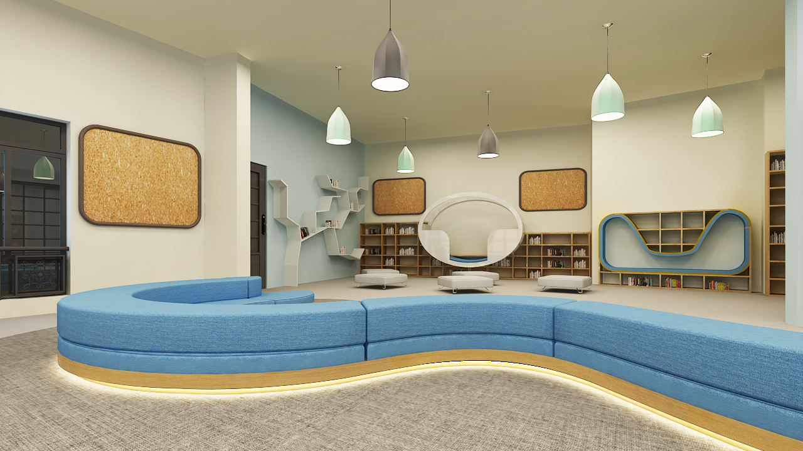
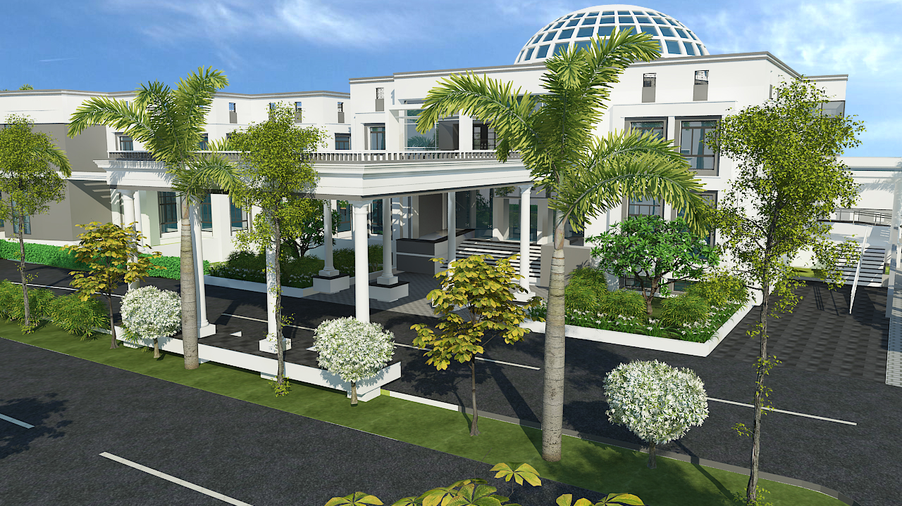
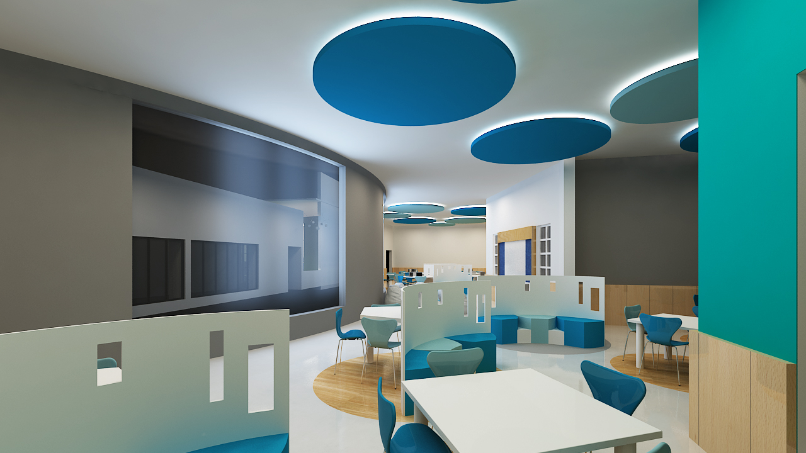
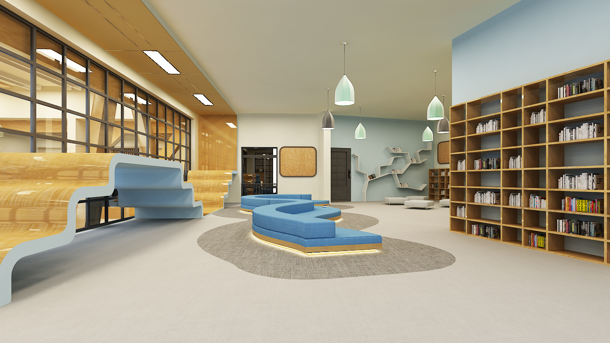
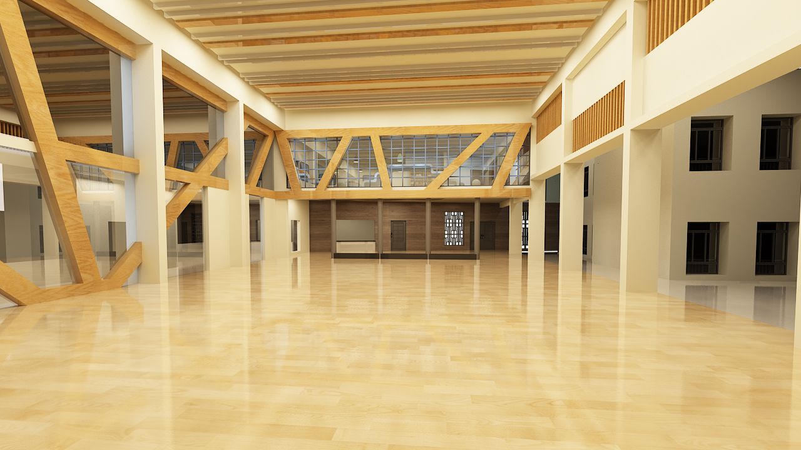
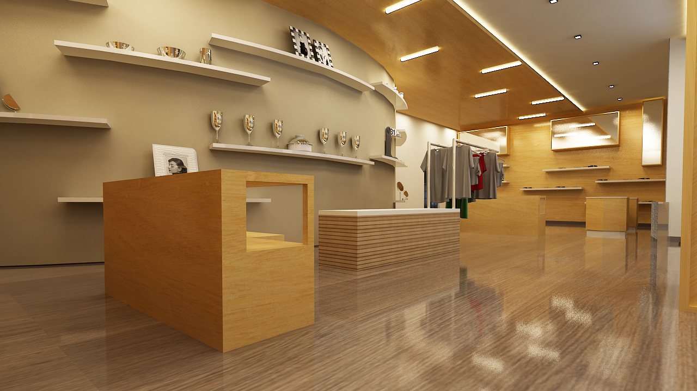
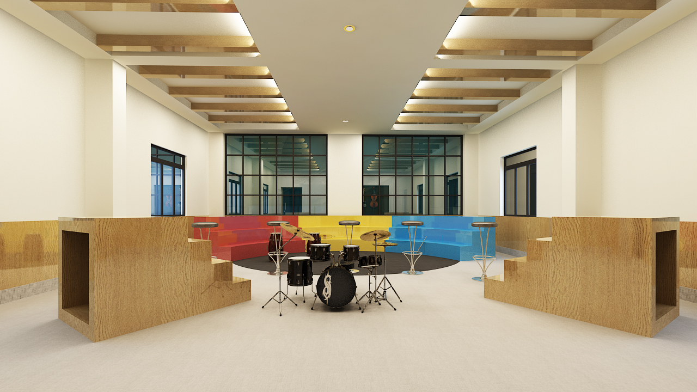

United World Academy

Overview
United World Academy sits on a ten-acre campus in Sarjapur, in south-east Bangalore. With a built-up area of 1,60,000 square feet, it is planned for 1,500 students and was designed specifically around the pedagogy of the International Baccalaureate. It is also one of our most striking buildings, defined by a deliberate contrast between a classical exterior and a contemporary interior.
The IB shaped the plan. Its programmes emphasise inquiry, collaboration and an international outlook, and ask students to research, discuss, create and present as much as to listen. That requires a school with more than classrooms: spaces for group work, specialist laboratories and studios, places for independent study, and areas where the community can gather and share work. We planned United World Academy around these needs, so that the building supports the way the curriculum is actually taught. The school is authorised for the IB Diploma Programme and Cambridge IGCSE, and the building meets the IB's standard that a school's learning spaces and resources must support the delivery of its programmes.
The exterior makes a bold statement. The elevations draw on the vocabulary of classical architecture — columns, arches and a strong symmetry — giving the school a sense of grandeur and permanence. Glass domes crown the building, acting both as architectural landmarks and as sources of natural light for the spaces below. The facades are made in Glass Fibre Reinforced Concrete (GFRC), a material that allows complex classical profiles to be produced with precision, at a fraction of the weight of stone or solid concrete, and with excellent durability in Bangalore's climate. GFRC made it possible to achieve the richness of a classical facade with modern construction methods.
Step inside, and the character changes. The interiors are contemporary and minimal — clean lines, uncluttered spaces and a restrained palette that lets light and activity take centre stage. Under the domes, daylight falls into the heart of the building, creating bright, uplifting spaces at the centre of school life. Classrooms and learning spaces are calm, flexible and focused, supporting the open, inquiry-led teaching of the IB.
The contrast is intentional. The classical exterior speaks to tradition: to the long history of learning, to the dignity of institutions, and to the idea that a school should be a building its community can be proud of. The modern interior speaks to the present: to new ways of teaching, new technologies and new ideas about how children learn. Together they express the school's aspiration to balance time-honoured educational values with progressive methods — respecting the past while preparing students for the future.
Making that contrast work required careful coordination. The rhythm of the exterior — its bays, openings and domes — is tied to the organisation of the spaces inside, so that the classical shell and the contemporary interior read as one building rather than two. Windows are placed to give classrooms good daylight and views, and the domes sit over the spaces where light is needed most.
Beyond the main building, the ten-acre campus provides room for sport, play and outdoor activity, giving the school's 1,500 students space to move, gather and grow. United World Academy is an unusual project in our portfolio, and a demonstration that a school can draw on very different architectural languages and still form a coherent, purposeful whole — one grounded in how its students learn.
Architects — Kumar & Swamy Architects, Bangalore








Planning a school or campus?
Tell us about your institution — a new campus, an extension, a master plan or a renovation. Every project starts with a conversation.